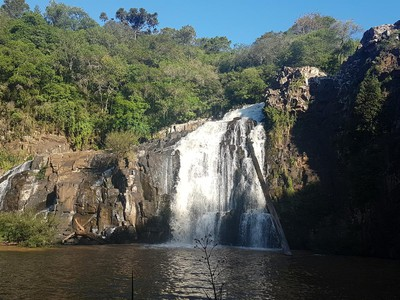
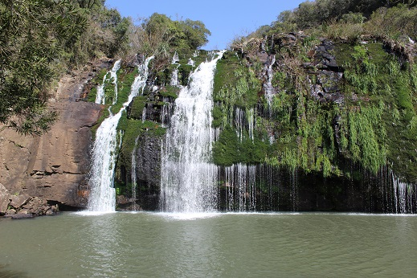
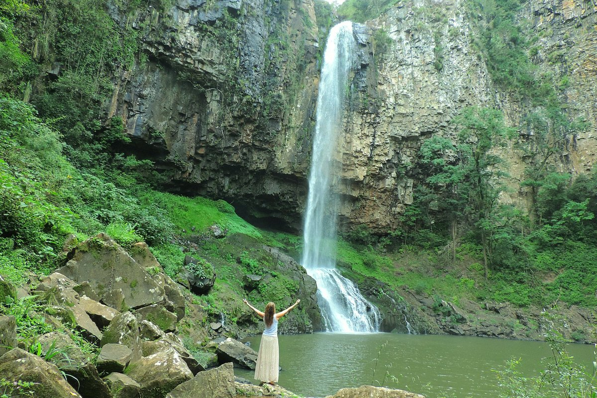
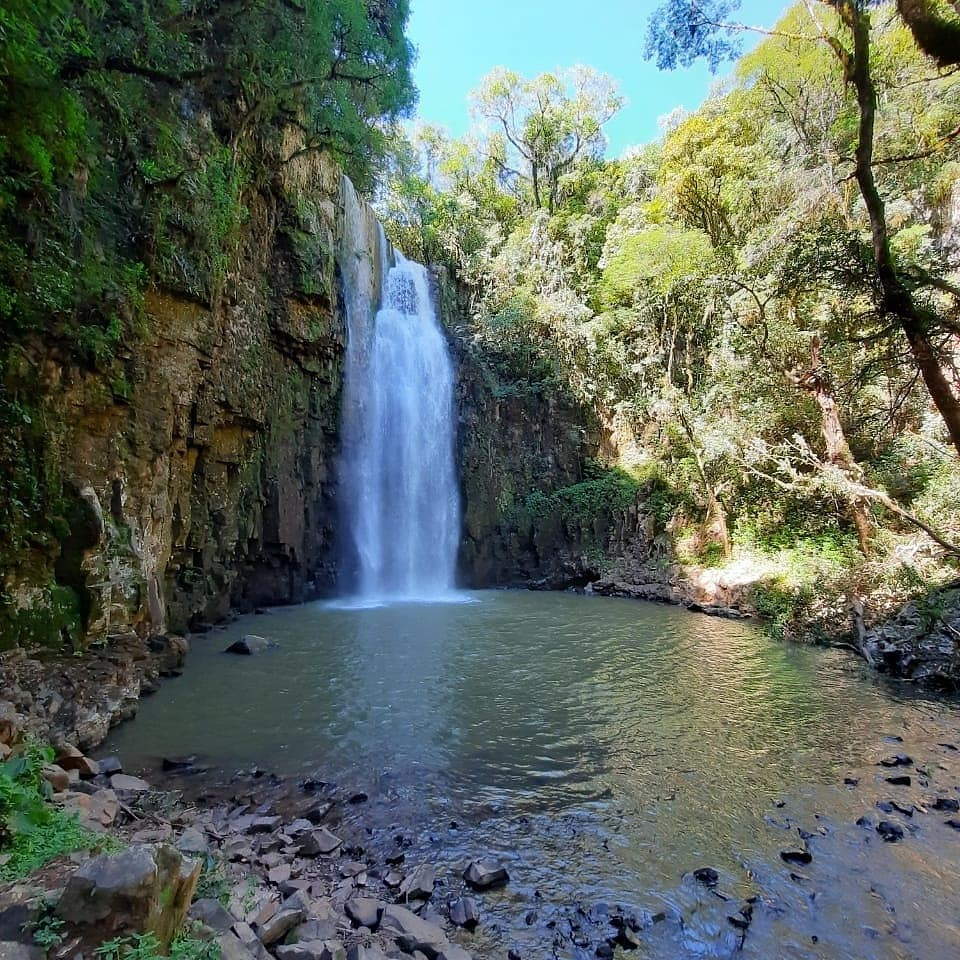
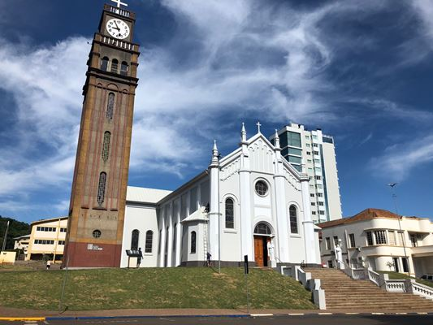
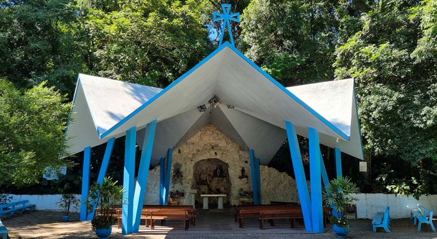
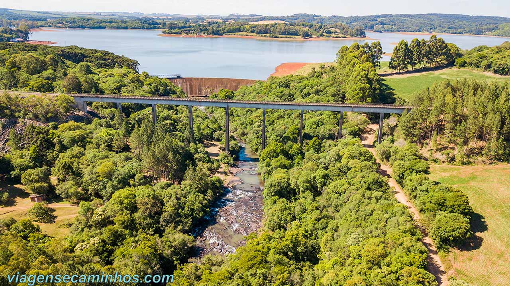
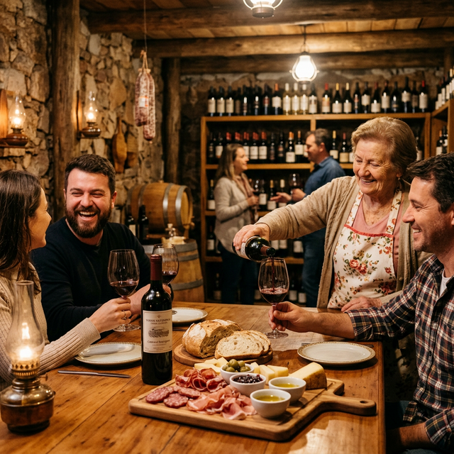

Turismo em
Marau RS
De cascatas imponentes à tradição italiana: descubra os tesouros da zona urbana e rural.
Belezas Naturais • Cascatas

Cascata do Cachoeirão
Localizada na comunidade rural do Cachoeirão, esta queda d'água de 30 metros é o destaque do Parque Virgínio Marosin. Um refúgio de natureza preservada que oferece trilhas e aventura a apenas 9km do centro.

Cascata da Pedra Grande (Carrascal)
Também conhecida como Cascata do Carrascal, possui 10 metros de altura e uma relaxante piscina natural. O local conta com camping estruturado, Wi-Fi e churrasqueiras em meio à mata nativa, a 30km da cidade.

Cascata do Maringá
Situada no município vizinho de Vila Maria, é a mais imponente da região com 54 metros de altura. Abriga uma histórica usina de 1947 ainda em operação, cercada por uma área de preservação municipal.

Cascata do Porongo
Com 31 metros de queda, esta bela cascata fica em uma área de lazer completa em Vila Maria. O local oferece infraestrutura para acampamento, lancheria e quiosques, a 18km de Marau.
Fé & História • Zona Urbana

Igreja Matriz Cristo Redentor
Um marco arquitetônico de 1941, famosa por sua imponente torre de relógios separada. É o coração histórico e religioso da cidade.

Santuário de Lourdes
Um oásis de serenidade no centro urbano. Perfeito para oração e caminhadas sob a sombra de árvores nativas em contato com a natureza.
Santuário de Santa Catarina
Localizado no bairro Fuga, abriga a maior estátua de Santa Catarina do país. Seu mirante oferece uma vista panorâmica privilegiada da região.
Aventura & Campo • Interior

Capingui & Viaduto Ferrovia do Trigo
O Viaduto da Ferrovia do Trigo impressiona com seus 230m de extensão sobre o vale. Logo ao lado, a Barragem Capingui forma um lago ideal para lazer e esportes náuticos.

Rota das Salamarias
Um roteiro autêntico pela zona rural que conecta 13 propriedades. Desfrute de vinhos artesanais, queijos e os famosos salames de Marau, unindo gastronomia típica e belezas naturais.
Vivencie Marau
Quer dicas exclusivas? Fale conosco 📸